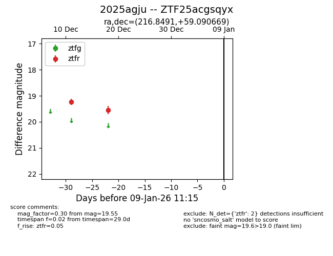
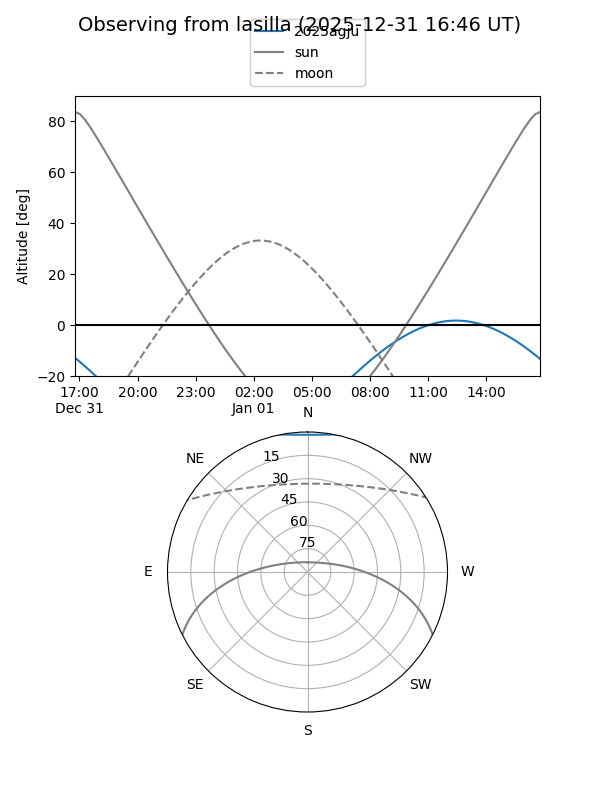
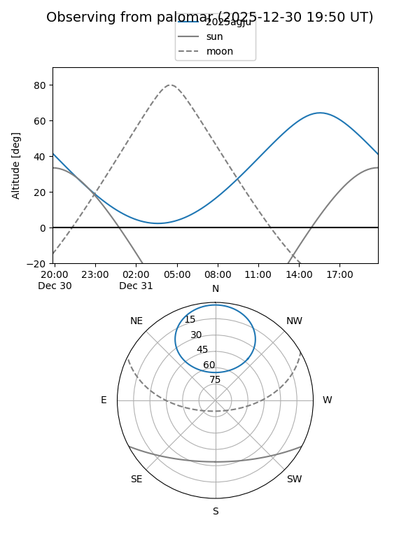

2025agju
Target 2025agju at 2026-01-09 12:49
Aliases and brokers:
FINK: link
Lasair: link
ALeRCE: link
TNS: link
YSE: link
alt names
ZTF25acgsqyx (ztf,fink_ztf)
2025agju (tns,yse)
Coordinates:
equatorial (ra, dec) = 216.8491,+59.09067
equatorial (HMS+DMS) = 14:27:23.77,+59:05:26.41
galactic (l, b) = (102.1250,+53.98908)
Flags:
Photometry:
last ztfr=19.55
2 ztfr detections
Lightcurve

Visibility


Additional plots